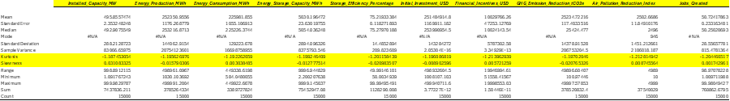
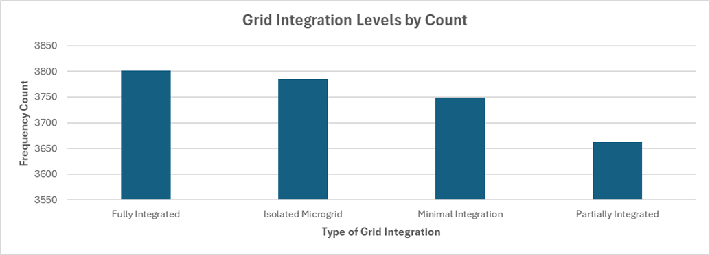

🔋 Renewable Energy Data Exploration
Project Overview
This project performs Exploratory Data Analysis (EDA) and hypothesis testing on the Kaggle Renewable Energy Dataset. Using Excel, it examines the relationships between financial investment, job creation, and environmental impact to provide data-driven insights for policymakers and investors.
Project Artifacts
Problem Statement & Goals
Research Questions:
- In which renewable sector is the government investing more, and what is the proportion of government investment to job creation?
- What is the relationship between grid integration level and energy production/consumption?
- How does government investment relate to installed capacity and production?
- Type of Renewable Energy (Coded: 1-Solar, 2-Wind, etc.)
- Installed Capacity (MW)
- Energy Production (MWh/year)
- Energy Consumption (MWh/year)
- Energy Storage Capacity (MWh)
- Storage Efficiency (%)
- Grid Integration Level (Coded: 1-Fully Integrated, etc.)
- Initial Investment (USD)
- Funding Sources (Coded: 1-Government, 2-Private, etc.)
- Financial Incentives (USD)
- GHG Emission Reduction (tCO2e)
- Air Pollution Reduction (Index)
- Jobs Created
- The dataset is treated as a sample, not a complete population. This is because the quantitative variables show a near-uniform distribution, which is uncharacteristic of a full population dataset.
- Further analysis could be enhanced by including geographical and time-series data, which are not present in this dataset.
- Data Validation: The dataset was checked for missing values and duplicates; none were found. Data types were confirmed to be correct.
- Outlier Detection: Outliers were assessed using the IQR method, box plots, and Z-scores. No significant outliers requiring removal were identified.
- Data Transformation:
- Standardization: 'Installed_Capacity_MW' and 'Energy_Production_MWh' were standardized using Z-score normalization to prepare them for comparative analysis.
- Categorization: Numerical variables like 'Installed Capacity' and 'Initial Investment' were categorized into high/low or high/medium/low groups to facilitate hypothesis testing (e.g., for Chi-squared and T-tests).
- Hypothesis Testing: Statistical tests were performed using Excel's Data Analysis ToolPak, including Odds Ratio, Chi-squared, T-test, ANOVA, and MANOVA to validate the research questions.
- Test Used: Odds Ratio (OR)
- Result: The Odds Ratio was 0.96, with a 95% Confidence Interval of [0.962, 0.967].
- Conclusion: Since the confidence interval does not contain 1, we reject the null hypothesis. This indicates a statistically significant, albeit small, relationship. The odds of a project having a large installed capacity are slightly lower for government-funded projects compared to non-government funded ones.
- Test Used: Chi-squared Test
- Result: p-value = 0.4715.
- Conclusion: Since the p-value is much greater than 0.05, we fail to reject the null hypothesis. There is no significant association between government investment levels and the type of renewable energy source.
- Test Used: Two-Sample T-test
- Result: p-value = 0.8051.
- Conclusion: The p-value is very high, so we fail to reject the null hypothesis. There is no significant difference in the number of jobs created based on the level of initial government investment.
- Test Used: ANOVA
- Result: p-value = 0.3501.
- Conclusion: With a p-value greater than 0.05, we fail to reject the null hypothesis. There is no statistically significant difference in mean energy production among the different levels of grid integration.
- Test Used: One-way MANOVA
- Result: Wilks' Lambda p-value = 0.6899.
- Conclusion: The p-value is high, so we fail to reject the null hypothesis. The grid integration level does not have a significant combined effect on energy production and consumption. Observed variations are likely due to random chance.
Dataset Overview
Source: Kaggle Renewable Energy Dataset
Description: Contains 15,000 records with 13 variables on renewable energy systems, including installed capacity, energy production, consumption, storage, investment, and environmental impact.
Key Variables:
Methodology & Assumptions
The analysis was conducted in Excel, following a structured approach to ensure reproducibility. Detailed records of all steps, decisions, and their rationale were maintained throughout the project.
Assumptions
Data Processing Steps
Exploratory Analysis Visualizations
As part of the initial exploratory data analysis, I generated several visualizations to understand the dataset's characteristics. The table of descriptive statistics provides a summary of the quantitative variables, while the bar chart shows the distribution of projects across different grid integration levels.
 Hypothesis Testing Results
Five hypotheses were tested statistically. The key findings are summarized below. For a non-technical audience, it's important to note that a p-value > 0.05 generally means we cannot conclude there is a real effect, and any observed differences are likely due to random chance.
Hypothesis 1: Funding Source vs. Project Scale
Objective: To determine if there is a relationship between the funding source (Government vs. Non-Government) and the scale of the project (Large vs. Small Capacity).
Hypothesis 2: Government Investment vs. Energy Type
Objective: To determine if there is a significant association between government investment and the type of renewable energy.
Hypothesis 3: Investment Level vs. Job Creation
Objective: To determine if there is a significant difference in mean job creation between government projects with high and low initial investments.
Hypothesis 4: Grid Integration vs. Energy Production
Objective: To determine if mean energy production differs across various grid integration levels.
Hypothesis 5: Grid Integration vs. Production & Consumption
Objective: To determine if grid integration level has a significant multivariate impact on both energy production and consumption.
Challenges & Learnings
A key challenge was interpreting the near-uniform distribution of quantitative variables, which led to the assumption that the dataset was a sample rather than a complete population. This project reinforced the importance of rigorous data validation and hypothesis testing to avoid drawing conclusions from patterns that may be due to random chance.
Conclusion & Next Steps
The statistical analysis consistently showed no significant relationships between the key variables of interest: investment levels, job creation, and energy types or production levels. The only statistically significant finding was a very small effect where government-funded projects were slightly less likely to be large-scale. This suggests that within this dataset, factors other than investment levels (e.g., policy, technology, location) are likely the primary drivers of project outcomes. Future work should aim to incorporate these external variables for a more complete analysis.